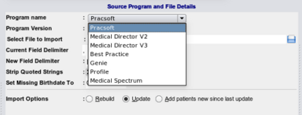
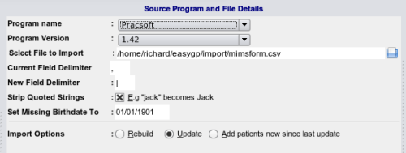
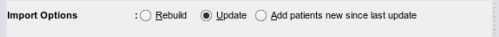

Importing Patients
At some point EasyGP will be able to import most demographic data formats. If your patient database is not supported
plase contact the developers. The import section is accessed from the Admin button on the side bar.
Select Program Source

Select Program Version
that you are importing from. A popup dialog will appear, you should navigate
to where your text-delimited data file is, select and select the file.

Type of Import

- Rebuild - will erase any existing patients in the database. This is not possible once the database is being used for clinical purposes
- Update - will attempt to update addresses for existing patients. There may be situations where a person has changed their name or a birthdate was incorrectly input from the original database and has since been corrected. EasyGP
will attempt to take these possibilities into account and prompt you where ambiguities arise.
- Add New since last update - will add only those patients not already present in the database.
Data Verification Process
If everything is satisfactory, click the 'import button'. EasyGP will perform some basic analysis of your data
- Town/Suburb spell checking - for example it will attempt to replace mis-typed names
- Postcode check - with insertion of correct or missing postcodes
- Firstname/Sex check - with insertion of sex
- Title check if possible, defaulting to Ms or Mr for ages > 18 where marital status obviously cannot be deduced
Any errors will be listed below the import error.
Once completed you may have to go back to the source database and correct any errors. Once happy click the import button.